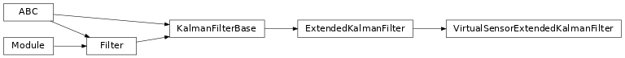

diffbayes.filters¶
Filter implementations; can either be used directly or subclassed.
Package Contents¶
Classes¶
Generic differentiable EKF. |
|
Generic differentiable particle filter. |
|
Square-root formulation of UKF. |
|
Standard UKF. |
|
EKF variant with a virtual sensor model for mapping raw observations to predicted |
|
Square root UKF variant with a virtual sensor model for mapping raw observations |
|
UKF variant with a virtual sensor model for mapping raw observations to predicted |
-
class
diffbayes.filters.ExtendedKalmanFilter(*, dynamics_model: DynamicsModel, measurement_model: KalmanFilterMeasurementModel, **unused_kwargs)¶ Bases:
diffbayes.base.KalmanFilterBase
Generic differentiable EKF.
For building estimators with more complex observation spaces (eg images), see
VirtualSensorExtendedKalmanFilter.
-
class
diffbayes.filters.ParticleFilter(*, dynamics_model: DynamicsModel, measurement_model: ParticleFilterMeasurementModel, num_particles: int = 100, resample: bool = None, soft_resample_alpha: float = 1.0, estimation_method: str = 'weighted_average')¶ Bases:
diffbayes.base.Filter
Generic differentiable particle filter.
-
dynamics_model¶ Forward model.
-
measurement_model¶ Observation model.
-
num_particles¶ Number of particles to represent our belief distribution. Defaults to 100.
- Type
int
-
resample¶ If True, we resample particles & normalize weights at each timestep. If unset (None), we automatically turn resampling on in eval mode and off in train mode.
- Type
bool
-
soft_resample_alpha¶ Tunable constant for differentiable resampling, as described by Karkus et al. in “Particle Filter Networks with Application to Visual Localization”: https://arxiv.org/abs/1805.08975 Defaults to 1.0 (disabled).
- Type
float
-
estimation_method¶ Method of producing state estimates. Options include:
‘weighted_average’: average of particles weighted by their weights.
‘argmax’: state of highest weighted particle.
- Type
str
-
particle_states:torch.Tensor¶ Discrete particles representing our current belief distribution. Shape should be
(N, M, state_dim).- Type
torch.Tensor
-
particle_log_weights:torch.Tensor¶ Weights corresponding to each particle, stored as log-likelihoods. Shape should be
(N, M).- Type
torch.Tensor
-
initialize_beliefs(self, *, mean: types.StatesTorch, covariance: types.CovarianceTorch)¶ Populates initial particles, which will be normally distributed.
- Parameters
mean (torch.Tensor) – Mean of belief. Shape should be
(N, state_dim).covariance (torch.Tensor) – Covariance of belief. Shape should be
(N, state_dim, state_dim).
-
forward(self, *, observations: types.ObservationsTorch, controls: types.ControlsTorch) → types.StatesTorch¶ Particle filter forward pass, single timestep.
- Parameters
observations (dict or torch.Tensor) – observation inputs. should be either a dict of tensors or tensor of shape
(N, ...).controls (dict or torch.Tensor) – control inputs. should be either a dict of tensors or tensor of shape
(N, ...).
- Returns
torch.Tensor – Predicted state for each batch element. Shape should be
(N, state_dim).
-
-
class
diffbayes.filters.SquareRootUnscentedKalmanFilter(*, dynamics_model: DynamicsModel, measurement_model: KalmanFilterMeasurementModel, sigma_point_strategy: Optional[utils.SigmaPointStrategy] = None)¶ Bases:
diffbayes.base.KalmanFilterBase
Square-root formulation of UKF.
From Algorithm 3.1 of Merwe et al [1].
[1] The square-root unscented Kalman filter for state and parameter-estimation. https://ieeexplore.ieee.org/document/940586/
-
property
belief_covariance(self) → types.CovarianceTorch¶ Posterior covariance. Shape should be
(N, state_dim, state_dim).
-
property
-
class
diffbayes.filters.UnscentedKalmanFilter(*, dynamics_model: DynamicsModel, measurement_model: KalmanFilterMeasurementModel, sigma_point_strategy: Optional[utils.SigmaPointStrategy] = None)¶ Bases:
diffbayes.base.KalmanFilterBase
Standard UKF.
From Algorithm 2.1 of Merwe et al. [1]. For working with heteroscedastic noise models, we use the weighting approach described in [2].
[1] The square-root unscented Kalman filter for state and parameter-estimation. https://ieeexplore.ieee.org/document/940586/ [2] How to Train Your Differentiable Filter https://homes.cs.washington.edu/~barun/files/workshops/rss2020_sarl/submissions/7_differentiablefilter.pdf
-
class
diffbayes.filters.VirtualSensorExtendedKalmanFilter(*, dynamics_model: DynamicsModel, virtual_sensor_model: VirtualSensorModel)¶ Bases:
diffbayes.filters,diffbayes.filters.ExtendedKalmanFilterEKF variant with a virtual sensor model for mapping raw observations to predicted states.
Assumes measurement model is identity.
-
class
diffbayes.filters.VirtualSensorSquareRootUnscentedKalmanFilter(*, dynamics_model: DynamicsModel, virtual_sensor_model: VirtualSensorModel, sigma_point_strategy: Optional[utils.SigmaPointStrategy] = None)¶ Bases:
diffbayes.filters,diffbayes.filters.SquareRootUnscentedKalmanFilter
Square root UKF variant with a virtual sensor model for mapping raw observations to predicted states.
Assumes measurement model is identity.
-
class
diffbayes.filters.VirtualSensorUnscentedKalmanFilter(*, dynamics_model: DynamicsModel, virtual_sensor_model: VirtualSensorModel, sigma_point_strategy: Optional[utils.SigmaPointStrategy] = None)¶ Bases:
diffbayes.filters,diffbayes.filters.UnscentedKalmanFilter
UKF variant with a virtual sensor model for mapping raw observations to predicted states.
Assumes measurement model is identity.